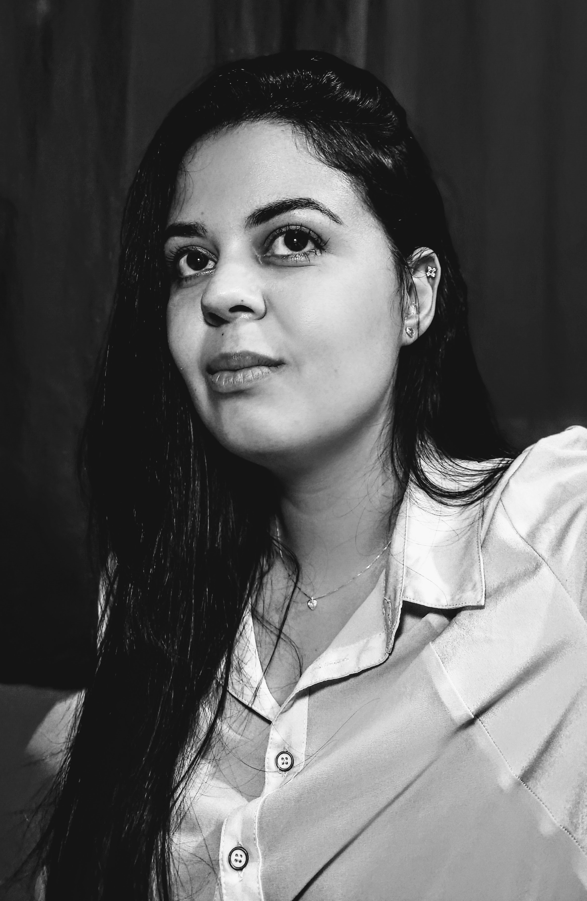

- Home
- ≫
- Sobre
Minha História

Bem vindo(a) ao meu Portfólio
Sou Giselle Barbosa, tenho 32 anos de idade, moro em São Paulo/SP Brasil. Atualmente me dedico exclusivamente em minha formação profissional. Em novembro de 2021 iniciei a graduação em Análise e Desenvolvimento de Sistemas. Além disso, busco alternar sempre meus estudos com cursos adicionais tais como; lógica de programação, Javascript, Html/css dentre outros. Em maio de 2022 fui aprovada para participar do Hiring Coders #3 e posteriormente do Bootcamp Santander Fullstack Developer 2022. Minha maior pretensão é ingressar na área de desenvolvimento e programação. Apaixonada por tecnologia desde muito jovem, video-games, computadores e celulares sempre fizeram parte da minha vida, além disso tenho facilidade em aprender coisas novas e facilidade em encontrar soluções para resolver problemas. Sou uma pessoa muito responsável, busco sempre a excelência em tudo o que faço. Possuo referências profissionais e busco por uma oportunidade de estágio para poder aprender cada dia mais e colocar em prática meus conhecimentos.
Tenho disponibilidade para estágio.
Abaixo, de forma listada, estão alguns assuntos em que eu tenho conhecimentos básicos: